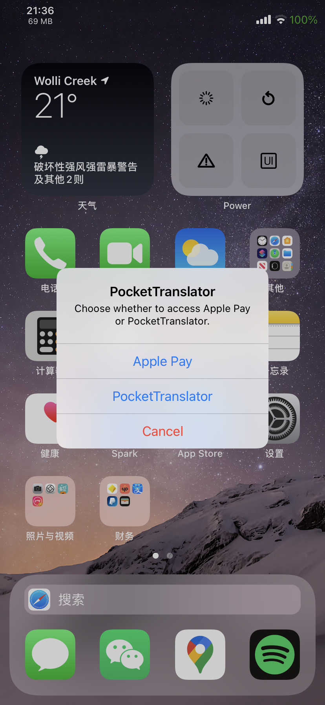
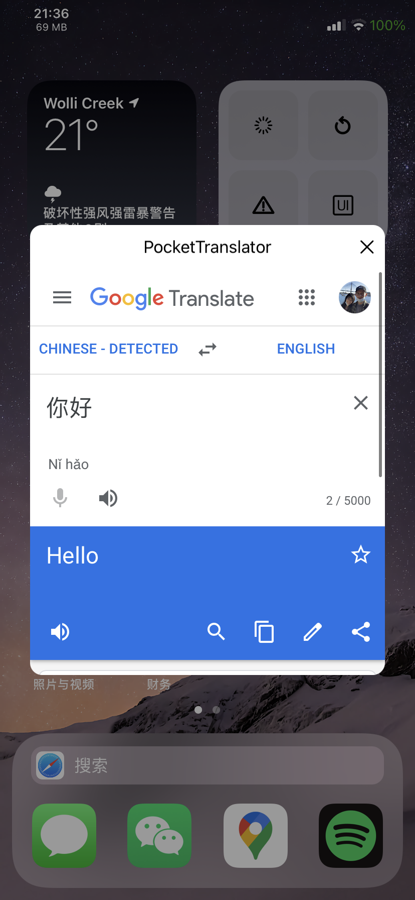

-
PocketTranslator is a light-weight mobile translation solution. After double tapping the power button, you'll be greeted with a menu, giving you the choice between accessing 'Apple Pay', or the translator.
 
In this version
-
1.1
- Remove the double tap power button gesture.
- Add a CC module.
- Add Activator support.
- Add 'pull to refresh' to the translator window.
- Minor bug fixes.
- Added support for DeepL translator.
Previous updates
-
1.0.0
- Initial release.
Known Issues
- No current issues.